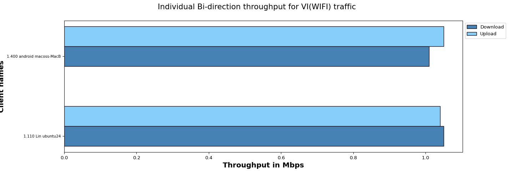
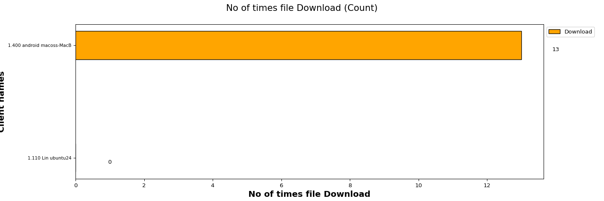
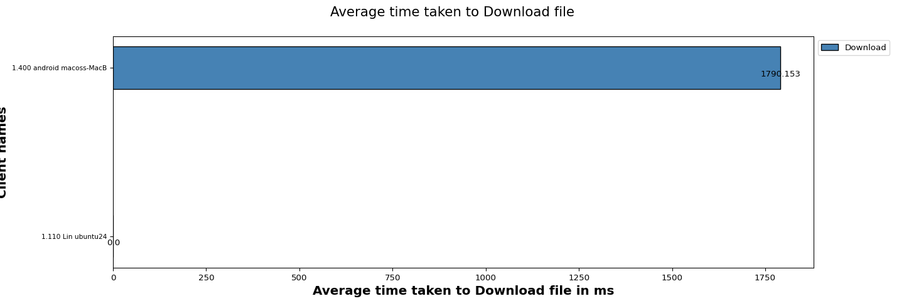
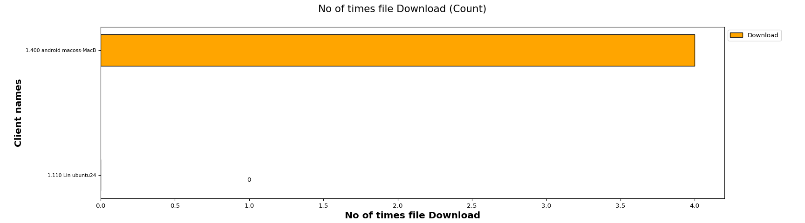
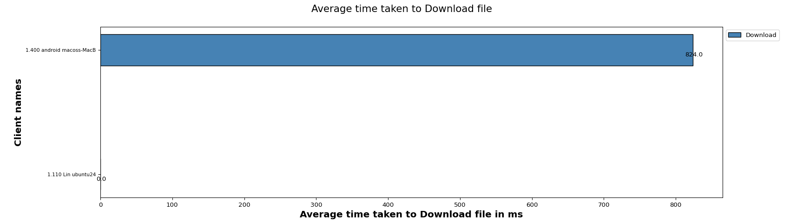
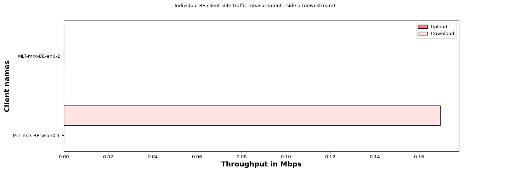

Test Setup Information
| Overall Setup Info For all Tests |
| DUT Model | Test_DUT | | DUT Firmware | NA | | SSID | Test Configured | | Security | Test Configured | | No of Devices | 2 (Virtual Clients: 0, Windows: 0, Linux: 1, Mac: 1, Android: 0 ,iOS: 0) | | Test Duration (HH:MM:SS) | 00:03:00 |
|
Objective
The Candela mixed traffic test is designed to measure the access point performance andstability by running multiple traffic on real clients like Android, Linux, Windows, and IOSconnected to the access point. This test allows the user to choose multiple types of traffic likeclient capacity test, web browser test, video streaming test ping test. Along with theperformance measurements are client connection times, Station 4-Way Handshake time, DHCPtimes, and more. The expected behavior is for the AP to be able to handle all types of traffic onthe several stations (within the limitations of the AP specs) and Make sure all clients can run alltypes of traffic.
Traffic Details
| Sno |
Test Cases |
Test Duration |
Test Status |
| 1 |
Ping Test |
1.0 minute |
Executed |
| 2 |
Quality Of Service(QOS) Test ['VI'] |
30 sec |
Executed |
| 3 |
FTP Test |
30 sec |
Executed |
| 4 |
HTTP Test |
30 sec |
Executed |
| 5 |
Multicast Test |
30 sec |
Executed |
1. Ping Test
Test Configuration
Packets sent vs packets received vs packets dropped

| Wireless Client |
MAC |
Channel |
SSID |
Mode |
Packets Sent |
Packets Received |
Packets Loss |
| ubuntu24 Linux |
5c:5f:67:98:38:86 |
11 |
NETGEAR_2G_wpa2 |
802.11bgn 20 2x2 |
2 |
0 |
2 |
| macoss-MacBook-Air.local Mac |
30:35:ad:c5:e1:be |
11 |
NETGEAR_2G_wpa2 |
802.11abgn-BE 20 2x2 |
13 |
13 |
0 |
Ping Latency Graph

| Wireless Client |
MAC |
Channel |
SSID |
Mode |
Min Latency (ms) |
Average Latency (ms) |
Max Latency (ms) |
| ubuntu24 Linux |
5c:5f:67:98:38:86 |
11 |
NETGEAR_2G_wpa2 |
802.11bgn 20 2x2 |
1000000.000 |
0.000 |
-1000000.000 |
| macoss-MacBook-Air.local Mac |
30:35:ad:c5:e1:be |
11 |
NETGEAR_2G_wpa2 |
802.11abgn-BE 20 2x2 |
19.668 |
24.826 |
42.256 |
2. Quality Of Service(QOS) Test
Test Configuration
| Test Setup Information |
| Protocol | TCP | | Traffic Direction | Bi-direction | | Security | Test Configured | | TOS | ['VI'] | | Per TOS Load | Upload:1.0 Mbps,Download:1.0 Mbps |
|
Individual Bi-direction throughput with intended load Upload:1.0 Mbps,Download:1.0 Mbps/station for traffic VI(WiFi).
The below graph represents individual throughput for 2 clients running VI (WiFi) traffic. X- axis shows “number of clients” and Y-axis shows “Throughput in Mbps”.

| Client Name |
MAC |
SSID |
Type of traffic |
Offered upload rate |
Offered download rate |
Observed average upload rate |
Observed average download rate |
Observed Upload Drop (%) |
Observed Download Drop (%) |
| 1.110 Lin ubuntu24 |
5c:5f:67:98:38:86 |
NETGEAR_2G_wpa2 |
Video |
1.0 Mbps |
1.0 Mbps |
0.85 Mbps |
0.84 Mbps |
0.00 |
0.0 |
| 1.400 android macoss-MacB |
30:35:ad:c5:e1:be |
NETGEAR_2G_wpa2 |
Video |
1.0 Mbps |
1.0 Mbps |
0.69 Mbps |
0.69 Mbps |
0.08 |
0.0 |
3. File Transfer Protocol (FTP) Test
Test Configuration
| Test Setup Information |
| Traffic Direction | Download | | File Size | 10MB | | File Location | /home/lanforge |
|
No.of times file Download
The below graph represents number of times a file Download for each client (WiFi) traffic. X-axis shows “No of times file Download” and Y-axis shows “Client names“.

Average time taken to Download file
The below graph represents average time taken to Download for each client (WiFi) traffic. X-axis shows “Average time taken to Download a file ” and Y-axis shows “Client names“.

Overall Results
| Clients |
MAC |
Channel |
SSID |
Mode |
No of times File downloaded |
Time Taken to Download file (ms) |
Bytes-rd (Mega Bytes) |
RX RATE (Mbps) |
| 1.110 Lin ubuntu24 |
5c:5f:67:98:38:86 |
11 |
NETGEAR_2G_wpa2 |
802.11bgn 20 2x2 |
0 |
0.000 |
0.000 |
0.0000 |
| 1.400 android macoss-MacB |
30:35:ad:c5:e1:be |
11 |
NETGEAR_2G_wpa2 |
802.11abgn-BE 20 2x2 |
13 |
1790.153 |
134.323 |
37.4697 |
4. Hyper Text Transfer Protocol (HTTP) Test
Test Configuration
| Test Setup Information |
| Traffic Direction | Download | | File Size | 5MB | | File location | /usr/local/lanforge/nginx/html |
|
No of times file Downloads
The below graph represents number of times a file downloads for each client. X- axis shows “No of times file downloads and Y-axis shows Client names.

Average time taken to download file
The below graph represents average time taken to download for each client . X- axis shows “Average time taken to download a file ” and Y-axis shows Client names.

Overall Results
| Clients |
MAC |
Channel |
SSID |
Mode |
No of times File downloaded |
Average time taken to Download file (ms) |
Bytes-rd (Mega Bytes) |
Rx Rate (Mbps) |
| 1.110 Lin ubuntu24 |
5c:5f:67:98:38:86 |
11 |
NETGEAR_2G_wpa2 |
802.11bgn 20 2x2 |
0 |
0.0 |
0.0 |
0.0000 |
| 1.400 android macoss-MacB |
30:35:ad:c5:e1:be |
11 |
NETGEAR_2G_wpa2 |
802.11abgn-BE 20 2x2 |
4 |
824.0 |
20.0 |
5.5675 |
5. Multicast Test
Test Configuration
| Test Setup Information |
| Protocol | UDP | | Type of Service (TOS) | BE | | Upstream Port | 1.1.eth1 | | Offered Load (Mbps) | 3.0 |
|
Individual throughput with intended load 3.0 Mbps station for traffic BE (WiFi).
The below graph represents individual throughput for 2 clients running BE (WiFi) traffic. Y- axis shows “Client names“ and X-axis shows “Throughput in Mbps”.

| Client Name |
Endp Name |
HW Version |
Port Name |
Mode |
Mac |
SSID |
Channel |
Type of traffic |
Traffic Protocol |
Offered Download Rate Per Client (Mbps) |
Download Rate Per Client (Mbps) |
Download Drop Percentage (%) |
| 1.110_ubuntu24_Linux |
MLT-mrx-BE-wlan0-1 |
Linux/x86-64 |
1.110.wlan0 |
802.11bgn 20 2x2 |
5c:5f:67:98:38:86 |
NETGEAR_2G_wpa2 |
11 |
BE |
Mcast |
3.0 |
0.169496 |
0.0 |
| 1.400_macoss-MacBook-Air.local_Apple |
MLT-mrx-BE-en0-2 |
Apple/x86-64 |
1.400.en0 |
802.11abgn-BE 20 2x2 |
30:35:ad:c5:e1:be |
NETGEAR_2G_wpa2 |
11 |
BE |
Mcast |
3.0 |
0.000000 |
0.0 |
| Overall Info |
| contact | support@candelatech.com |
|